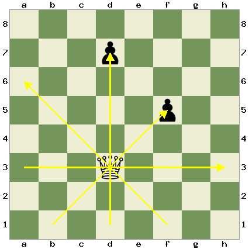

Rules
This section will teach you the rules of the game. We will start with the board set up, then cover the movement of each piece, and end with and special rules.
Table of Contents
- General Rules and Setup- Pawn
- Rook
- Bishop
- Knight
- Queen
- King
- Special Moves
- Castling
- Promotion
- En Passant
- Draws
- Agreement
- Stalemate
- Repetition
- Insufficient Material
- 50 Move Rule
General Rules and Setup
Chess is played on an 8x8 grid, with squares alternating between light and dark as seen below. To play, each side takes turns moving a piece according to the rules in later sections of this page. The player with the white pieces will make the first move. The players take turns moving their pieces and capturing there opponent pieces. Capturing happens when one player moves a piece onto a space with one of there opponents piece's, in which case the opponent's piece is removed from the game. The ultimate goal of the game is to get the opponents king into a state called "checkmate." This happens when you are threatening a capture on the enemy king, and the opponent can't do anything to prevent you capturing it on the next turn. If this state is reached, the game is over, and the checkmated player loses.
To setup the board, each square is typicaly assigned a coordinate value based on the numbers and letters that can be seen on the left and bottom of the board. For example, the bottom left square would be "a1" and the top right would be "h8." The movement of pieces can be written down by first indicating the starting coordinate of the piece and then the ending coordinate, so a movement from the bottom right to the top left would be "h1 a8"

The initial setup of the board, going from left to right is as follows: Rook, Knight, Bishop, Queen, King, Bishop, Knight, Rook.
A line of pawns is then placed in front of this to complete whites starting position. Then, to setup blacks position you mirror whites position to the other side of the board. Keep in mind that both sides kings should be directly across from each other. A good way to remember this is to think that the queens always start on their own colour.
Pawn
The pawn is the weakest piece on the chess board, having a value of 1 point. They can move straight forward one square, but can not capture moving forwards. They can only capture by moving diagonaly forwards, either left or right.
If the pawn has not yet moved in the game, meaning it is still at it's starting position, you can choose to move it either 1 space forwards, as usual, or 2 spaces forwards. This allows you to develope you pawns faster.
Rook
The rook can move as many squares as you want either horizontaly or verticaly. It captures by moving into the opponents piece.
Bishop
The rook can move as many squares as you want diagonaly, either forwards or backwards. It captures by moving into the opponents piece.
Because of the way the bishop moves, it will always be on the same color square that it started on. Because of this, the bishops are often reffered to as either you light squared bishop or your dark squared bishop.
Knight
The knight can move in an L shape, moving 2 spaces forwards, backwards, or to either side, and then moving 1 space sideways from there. It is also the only piece that can jump over other pieces, it can jump straight to it's final position without capturing or being blocked by any pieces in between.

Queen
The queen combines the movements of both a rook and a bishop. This means it can move as many squares as it wants horizontaly and verticaly like a rook, but also as many as it wants diagonaly, like a bishop. This makes it the most powerful piece on the chess board.
King
The king can move 1 square in any direction, verticaly, horizontaly, and diagonaly. It is not a very powerful piece, but it is the most important piece on the board, as you can't let your opponent capture it. If your opponent gets you in a position in which they can capture your piece on their next turn, it is called checkmate, and they win the game.
Special Moves
Castling
Caslting is a move that allows you to move your king two spaces to either side and move the rook on that side to the space the king passed over. This move is only allowed if: neither your king nor the rook on the side you are castling have moved, the king is not in check, and would not move through check to castle, and there are no pieces between the king and the rook. This move is useful as it can get your king into a safer position, and helps develope your rook, making it more useful. For an example, in the following example, white can castle either to the left or to the right, as shown.
Promotion
When any one of your pawns reaches the opponents end of the board (either the 8th or 1st rank depending on your color), you are allowed to promote that pawn. This means you can change it from a pawn to any other piece, excluding the king. This means the pwn can be made into either a knight, a bishop, a rook, or a queen. This movement is very powerful, and plays a large role in endgame, where most often the goal is to promote your pawn before the other player to secure your win.

En Passant
En passant is a special move that only takes place in very rare scenarios. It is French for "in passing,"" and was implemented at the same time pawns were first allowed to move two squares forward on their first move. Chess players at the time were concerned that this ability to move two spaces forward would allow pawns to sneak past other pawns in ways they couldn't before, and ended up implementing this rule to prevent this. It states that if a enemy pawn moves18 forward 2 squares from it's starting position, and ends up directly beside one of your pawns, you are allowed to move diagonaly behind that pawn and capture it "in passing."
Draws
There are various different ways in which a chess game can end in a draw, where no winner is decided. This section will teach about the various forms of draws.
Agreement
A draw by agreement happens when both players agree to end the game in a draw. This often happens when both players can see that the game will end in a draw in a different way later in the game.
Stalemate
A stalemate happens when it is a players turn and they have no legal moves they can make, but are not in checkmate. This end the game in a draw. When you're winning near the end of the game this is something to watch out for. An example of a stalemate position is below, the king cannot move, but is not in check, so it is stalemate.
3 Fold Repetition
3 fold repetition happens when a sequence of moves is repeated multiple times in a game. If in a game the same position has appeared 3 times, with the same player to move each time, this rule comes into effect and the game is a draw.
Insufficient Material
This draw happens when both players do not have enough pieces to checkmate the opponet. There are many combinations of pieces which would produce this type of draw, such as an engame in which one player has a king and a bishop and the other has only a king, making checkmate impossible.
50 Move Rule
This is a rare form of draw, and only happens when, in the past 50 move, neither player has captured a piece, or pushed a pawn. This is to prevent games from going on ideffinetly without either player winning.
Coded By: Finn Cullen 2023